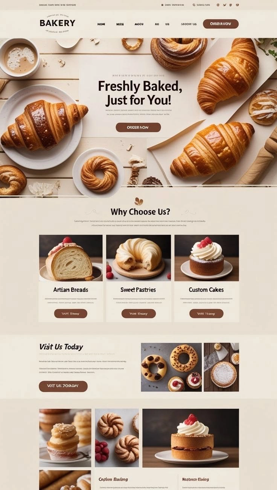

Páginas web con diseño personalizado
Olvídate de las plantillas genéricas. Construimos una identidad visual única que cautiva a tus clientes y posiciona tu marca desde el primer clic, con una base pensada para crecer contigo.
Construimos arquitectura digital sólida y escalable. Elevamos tu marca
mediante soluciones de alta precisión que actúan como tu vitrina digital
definitiva.
Optimizamos cada línea de código para que tu vitrina digital cargue instantáneamente, sin fricciones.
Protegemos tu infraestructura con estándares industriales, garantizando la integridad de tus datos.
Diseñamos arquitecturas que crecen contigo, adaptándose a las demandas cambiantes del mercado.
ECOSISTEMA TECNOLÓGICO
Diseñamos herramientas digitales robustas, elegantes y precisas.
Estos son los servicios que ofrecemos para construir el hogar digital de tu
marca con tecnología de vanguardia.
Nuestros expertos están listos para materializar tu visión con la precisión técnica que tu proyecto exige.